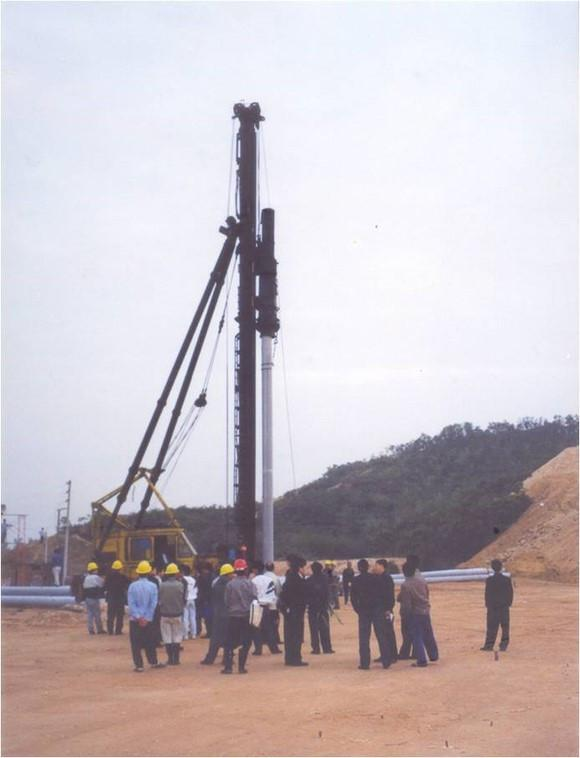

99年9月签约，2000年9月必须开学，时间之紧迫、任务之艰巨可想而知。珠海老百姓发自内心地支持校区建设，在非常短的时间内完成了果林赔偿、土地赔偿和祖坟迁移问题，只因大家心里都怀着同一个梦想，老百姓说：“中山大学十年前就该来了!
珠海市的大力支持下，中大短时间内完成了招投标工作、规划设计工作，规划费从1000万人民币谈到30万，总规划师莫尼先生说：我不再为了挣钱，我要在中国的土地上实现我的规划蓝图。
(上面那个就是总设计师莫尼先生啦，听说当时他坐着直升飞机在珠海上空绕了很久，才最终定下了珠海大学，也就是现在中山大学的地址。那可是珠海最好的一块地~）
(据说当时珠海市政府定期集聚各个局的局长到中大，专门给有关校区建设的文件盖章，以提高效率)

（1999年12月6日，教学实验大楼打下第一根桩，正式拉开了珠海校区大规模建设的帷幕）
（1999年12月6日，教学实验大楼打下第一根桩，正式拉开了珠海校区大规模建设的帷幕）
（图为亚洲第一长教学楼的原始地貌 ）